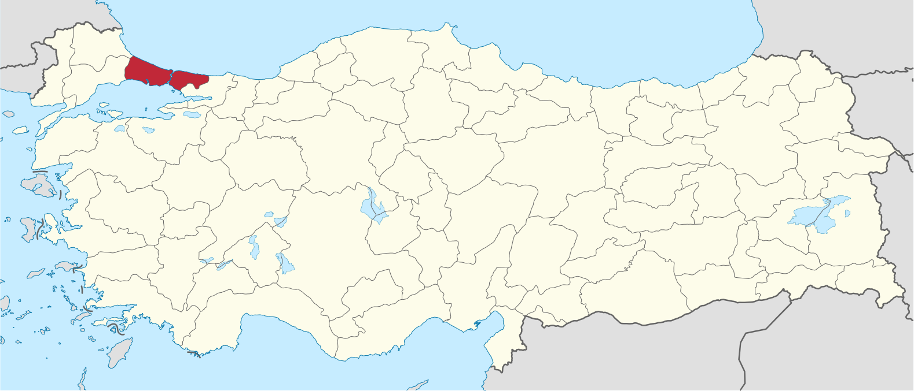
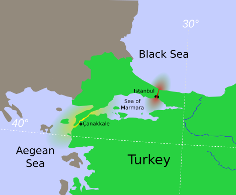
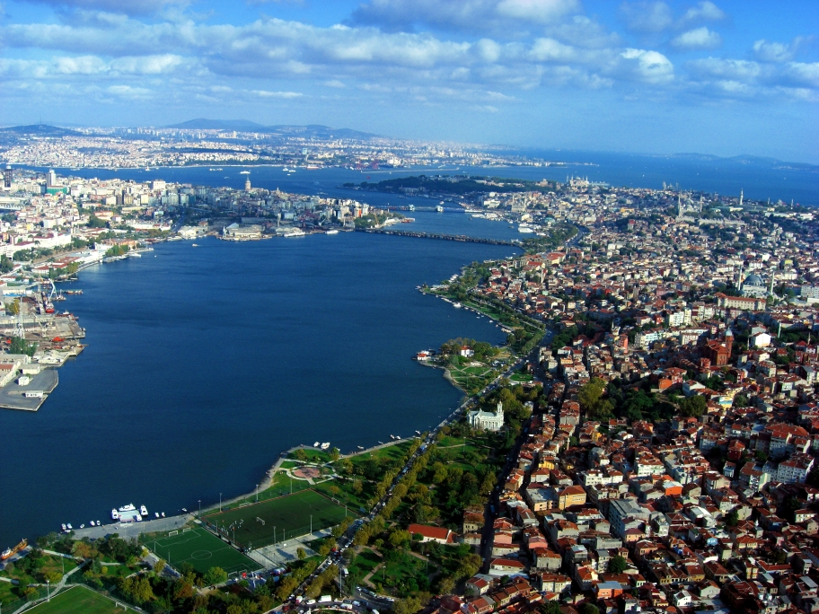

Istanbul liegt im Nordwesten der Türkei und ist die einzige Millionenstadt der Welt, die auf zwei Kontinenten liegt. Der Bosporus trennt den europäischen vom asiatischen Teil.


Der größere Teil der Stadt liegt in Europa, der kleinere in Asien. Über den Bosporus führen mehrere Brücken, außerdem fahren Fähren und ein Tunnel verbindet beide Ufer.

Istanbul liegt zwischen dem Schwarzen Meer im Norden und dem Marmarameer im Süden. Das Goldene Horn, eine Meeresbucht, teilt den europäischen Teil noch einmal in zwei Hälften.